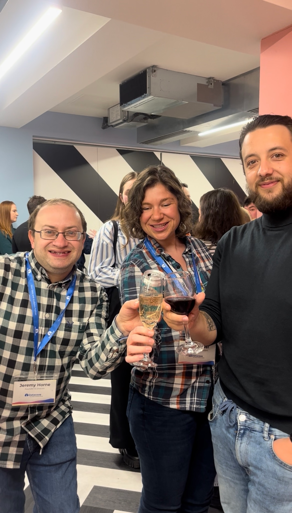

Jeremy Horne, organizer of the Birmingham R User Group and founder of the data and analytics consultancy Datacove, recently spoke with the R Consortium about rebuilding Birmingham’s R community as an inclusive space for learning and collaboration. Drawing on Datacove’s experience supporting R user groups across the UK, Jeremy discussed the Birmingham group’s relaunch post-COVID and how bringing R and Python users together has strengthened participation across industries. He reflected on the importance of cross-language collaboration, welcoming freelancers and early-career practitioners, and creating community-led meetups that translate shared knowledge into real professional opportunities.
Please share about your background and involvement with the RUGS group.
I’m Jeremy Horne, the founder of Datacove, a data and analytics consultancy based in Brighton, UK. We utilize data to drive decisions that save businesses time and money. Let me share how I got here before diving deeper into what Datacove does.
I have been working in data and analytics for over 20 years. I graduated with a first-class degree in Statistics and Economics in 2005 and started using R on my first day at my first job. I was undertaking a six-week summer position at a consultancy in London, where they were at the forefront of machine learning technology. They had developed their own version of Support Vector Machine (SVM) technology, which they were using on client projects to solve complex problems.
In 2005, this was groundbreaking, as not much was being done in the field at the time. Back then, there was only one SVM algorithm available in R, and Python was still developing its capabilities. On my first day, the company’s CEO handed me a 99-page manual he had printed from the internet. It was an introduction to R, all in black and white, and it looked rather dull. He told me, “This is our tool; learn it.” That was the extent of my guidance for learning R! They had their own SVM algorithm, but it was essential to see how it compared to R’s.
At that time, the SVM in R (available in the e1071 package) was not producing results as effective as our in-house algorithm. So, I immersed myself in learning how to use R for other tasks, but I found it tedious and unappealing. Base R was not very user-friendly, lacking modern features like the tidyverse. Every line of code looked complicated and unattractive, full of dollar signs and other unfamiliar symbols. I thought, if this is the future, I wasn’t sure I was ready for it, and I put it aside for a few of years.
Around 2010, I revisited R and found that many more algorithms, especially for machine learning, had become available. I tested several and consistently achieved better results for our clients. Over this time, I had developed a strong understanding of how AI and machine learning models work, which allowed me to fine-tune my models more effectively.
My journey transitioned from consulting to exploring the marketing field in 2014. I found marketing to be fascinating, filled with data and potential, yet plagued by inefficiency. Many marketers spend hours creating reports and pulling data from sources like Facebook and YouTube without fully understanding the value of those reports or data. I worked with three different marketing agencies, appealing to them to shift from extensive reporting to predictive data analysis. I realized that too much time was wasted on assembling static reports, which led me to start my own business.
I wanted to help people work more efficiently with data. Many view data as a cost, but I believe it is an investment in the business. When you invest in data analysis, it pays off by revealing insights that drive growth. Some people say “data is the new oil,” but at Datacove, we prefer “data is the new soil” because it nurtures and enables your business to grow.

Can you share what the R community is like in the United Kingdom in general and in Birmingham specifically?
To clarify, we run R user groups across the UK, not just in Birmingham. In fact, I’m in Brighton at the moment for tonight’s Brighton R user group meeting. We host user groups in Brighton, Bristol, Birmingham, London, Manchester, and Portsmouth—six R user groups in total. Additionally, we organize the EARL conference in the UK, which focuses on enterprise applications of R and Python. We have strong connections with the community throughout the UK.
In Birmingham, the predominant industries using R include pharmaceuticals, healthcare, financial services, and insurance. These are the industries that frequently engage with our user groups and with which we work closely.
Birmingham’s R community is still evolving and rebuilding. It tends to be one of our more junior communities, and we are actively working to bring more people back into the Birmingham R scene. We see a good mix of attendees, many of whom are freelancers. These individuals are often curious and eager to learn, but may not have a large team to support them. The community atmosphere provides them with a sense of belonging and peer support to discuss their challenges.

I remember a comment from someone at EARL two years ago. He works in data and tech, doesn’t primarily use R, but decided to attend EARL out of interest. By the end of the conference, he expressed surprise at how helpful, friendly, and supportive the R community is, even for someone new to it. Everyone there is eager to help one another, whether it’s providing guidance or assisting someone in advancing their career.
Moreover, I want to share a story about a student we assisted with a discounted EARL pass. Three months later, he reached out to let us know he met someone at the conference who offered him a job directly as a result of that encounter. This illustrates the strong sense of community within the R network, which remains important.
There is definitely an evolution in our community driven by new technologies. It has often been seen as a debate between R and Python, but I’ve come to realize it’s not about choosing one over the other. I started my business with R and over time, have brought in Python experts, recognising that using both languages together can be very beneficial.
While Python is more widely used, R skills can be highly valuable. There are fewer people specializing in R, which makes those who do stand out in the job market. For instance, we collaborate with the government to develop R-based Shiny applications. The UK government seeks cost-effective, easy-to-integrate solutions, and since R is open-source and free, it is a valuable resource in this context. Shiny applications, in particular, are inexpensive to host, creating a significant community around R, where you can truly enhance your value as an R programmer.
How is the Birmingham R User Group evolving post-COVID?
The group started many years ago, but I can’t recall exactly when. When COVID hit, the meetups stopped. Noticing this, we decided to pick it back up last year. So far, we’ve only hosted one meetup, but we’re planning another one for early 2026.
We’re relaunching the group in Birmingham and need to find the right space to host meetups. Being a community group, we want to keep the events as free or low-cost as possible. However, it has become increasingly difficult to secure free or reasonably priced venues across the UK. We’re prepared to contribute financially to keep the community going, but we haven’t yet found the ideal space in Birmingham.
Our goal is to host quarterly meetups this year. We already have a schedule for other groups: meetups occur quarterly, except in Brighton, where we meet every two months, for a total of 6 meetups a year. The Brighton group is more integrated with the Python community, and we now co-run the R and Python meetups. It’s not just about R or Python; it’s about collaborating to solve people’s problems. I’d much rather see everyone in the same room working together rather than separating R and Python enthusiasts.
Although we haven’t organized many meetups in Birmingham, we have a couple of champions in the area who are strong supporters of the community. They are actively helping us revitalize the group as best as they can.

How do you approach community building across multiple cities, and what tools or platforms help you keep people connected between events?
I believe that Meetup.com is an excellent platform for hosting events. It allows you to provide all the necessary information, including pictures and files, which is great for sharing presentations and materials related to meetups.
Additionally, since we’re hosting so many events, we’ve created a Linktree. This platform is a hub where you can find everything we do, including information about our meetup groups. If you enjoy our Birmingham meetup but find yourself in Manchester or London on the same day that we’re in town, why not join us there?
We also use YouTube to live-stream our events in Brighton, thanks to a partnership with Silicon Brighton. We would like to expand this to other cities, but it takes effort. Especially post-COVID, not everyone wants to attend events in person. Live streaming allows individuals to enjoy the talks, gain knowledge, and even contribute by asking questions—all without being in the same room. Plus, if the speakers agree, the recorded talks are available online indefinitely, which benefits their professional visibility.
We emphasize the importance of maintaining community engagement, since events are typically only 2 hours long, held every couple of months. It’s crucial to keep the conversation going beyond those meetings.
How do you use R in your own work at Datacove, and are there any projects you’d like to highlight that reflect its real-world impact?
I believe we use R for a wide range of applications. Instead of listing everything we do, I want to highlight a fundamental issue I’ve noticed in the field of data and analytics: it feels a bit broken. Often, we receive data and, as excited data analysts, we jump straight into analyzing it. However, after months of work, we may find that the conclusions we draw are underwhelming or unclear.
To truly make data valuable, we need to focus on specific problems and challenges. I have regularly walked into clients’ offices and been presented with a spreadsheet asking “what can you do with this?” - but that’s not the right approach. Instead, I ask back to them, “What is your biggest business challenge? If you’re in a board meeting right now, what would you be discussing? What keeps you up at night as a business owner?” Answering these questions helps us identify how data can address those challenges.
For example, if a business owner says, “I’m worried we’re spending $50,000 too much. Where can we save money?” that gives us a clear, focused brief. We can then analyze the data to determine what is working and what isn’t. This includes identifying customers unlikely to convert and pinpointing ineffective advertising spend.
Recently, we have tackled several challenges, including the need for improved segmentation in a customer database. The brand has clients who engage frequently, and others who haven’t interacted in two years; these are very different individuals and should be treated accordingly.
In terms of marketing, we have helped clients with media mix modeling, enabling them to refine their marketing budgets. If that $50,000 is not yielding results, we can stop spending it. If we can achieve the same results with a $10,000 investment rather than $20,000, that’s $10,000 we can redirect elsewhere or save.
Additionally, we work on automation, workflows, and reporting for clients who want to streamline their processes, reduce errors, and save both time and money. We aim to create seamless, interactive dashboards with automated, regular update schedules.
For example, we collaborated with the UK government, where data was previously housed across 50 different sources. If you were a decision-maker for a local council, you would have to log in to each of those sources, which could take hours before you could make informed decisions. We consolidated this data into a single platform, enabling decision-makers to quickly access all necessary information. This saves time and enables them to focus on improving operations and making places better for people to live in.
In today’s world, if a task takes you more than an hour to complete, consider whether there’s a more efficient way to accomplish it. With the rise of tools like OpenAI and programming languages like R and Python, there are numerous ways to streamline your processes and enhance productivity. That’s our fundamental belief at Datacove.